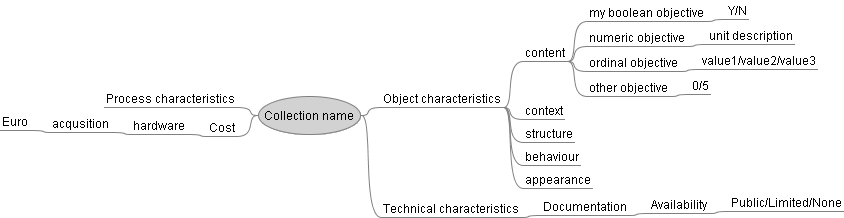
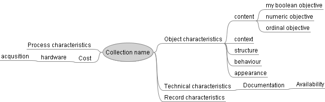
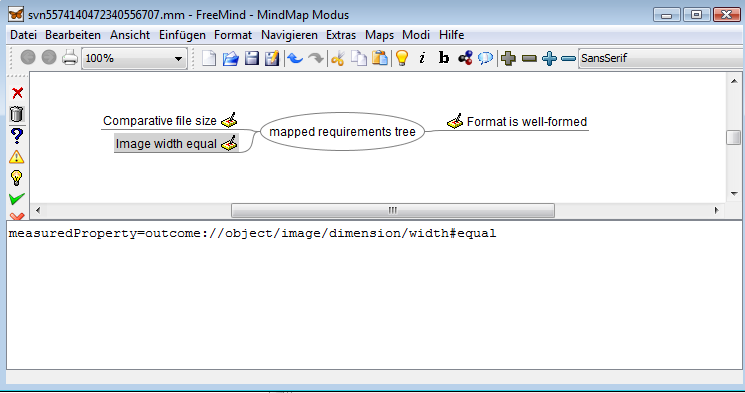
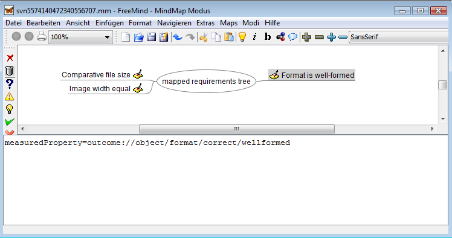

This page explains the syntax that should be used when specifying objective trees with the mind-mapping software Freemind.

This page explains the syntax that should be used when specifying objective trees with the mind-mapping software Freemind.
In general, just construct a mindmap containing the structure, save
it and upload the .mm file.
The leaf nodes of the mindmap will
be taken either
If you choose to define scales, you have to specify a scale for every
leaf node.
This means you have to add a child node to every
leaf with a text specifying the type of scale. The following types
are possible:
The following tree fragment contains various types of scales.

For numeric values, you can specify a range of values by using the
"lower/upper" notation. The 'other objective' in the provided tree
has a numeric range between 0 and 5.
Note that the example
tree shown here is incomplete and cannot be uploaded because some
leaf nodes contain units, whereas others don't.
A valid tree
without measurement units is provided below.

Finally, you can define mappings to measurable properties and metrics
directly in the Freemind tree by using annotations.
As an
example, consider the two screenshots below where a minimal tree is
shown that contains mappings to automated measurements.
Note
that these are case-sensitive and correspond to the mappings which
you can define in the tree editor. Be careful with the URLs of the
measurements, they have to be valid!
 